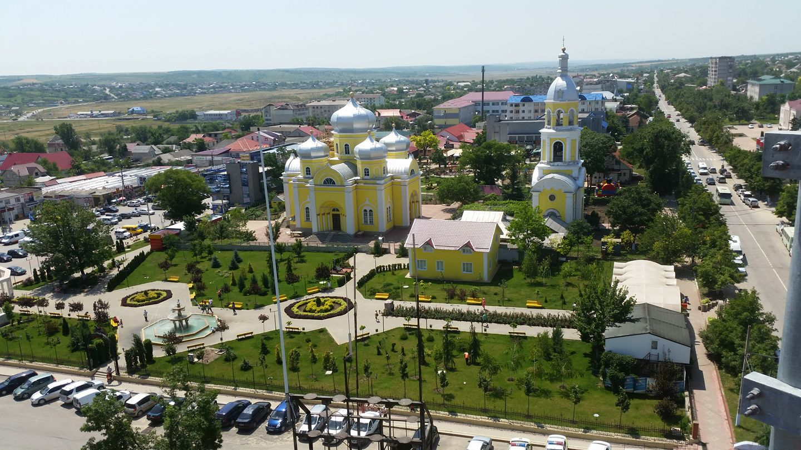
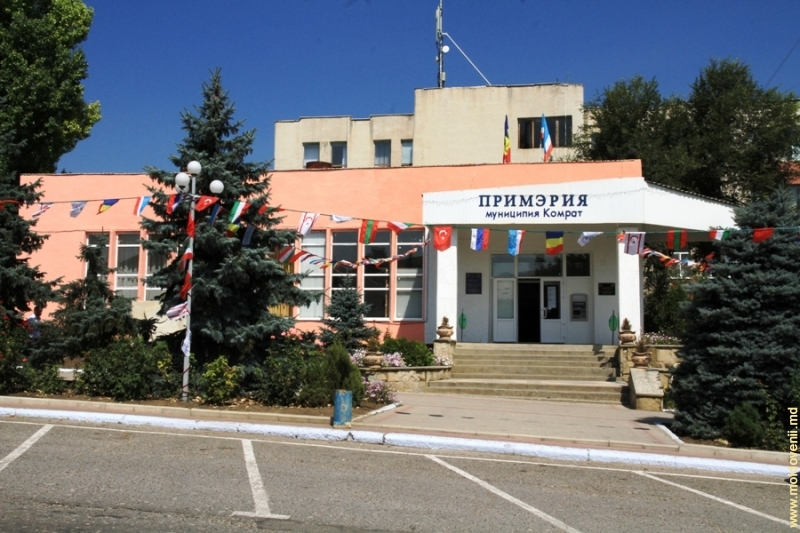
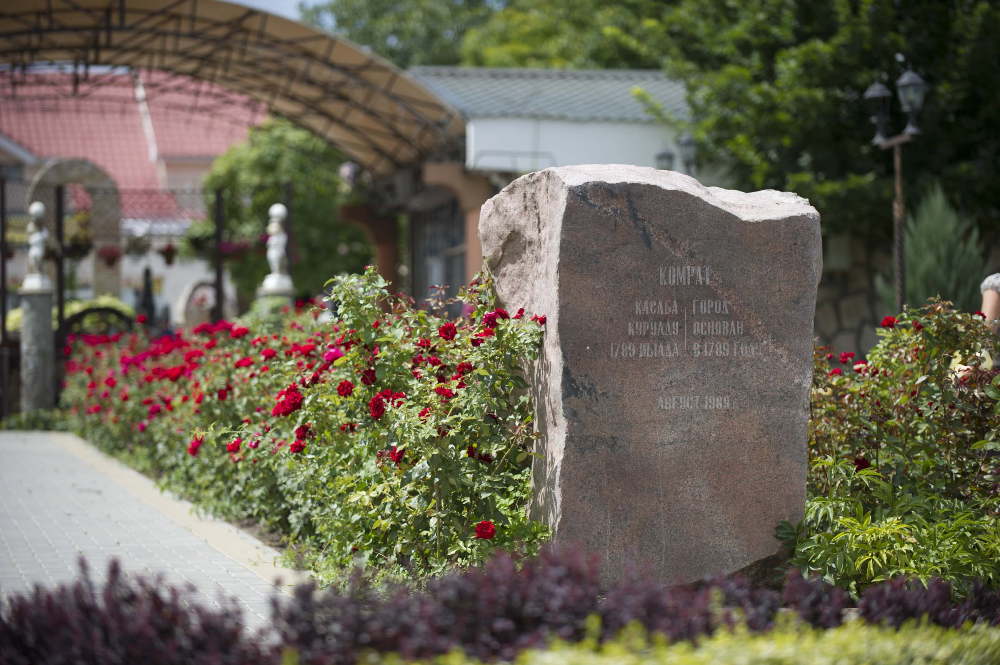
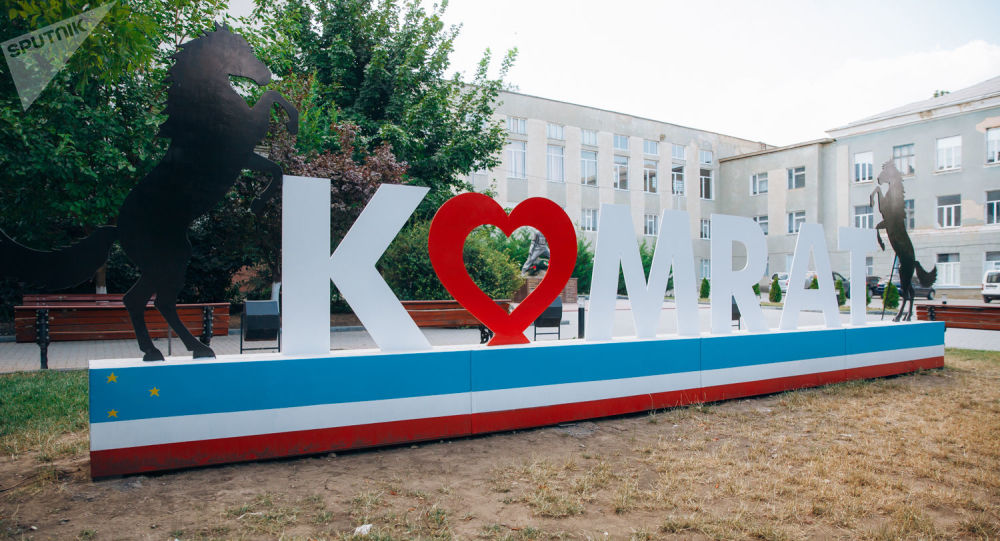

Komrat – zengin kasaba.

Komrat kasabası — Gagauz Avtonom Bölgesinin baş kasabası.
Gagauz Erinin baş kasabası Komrat bir önemni politika, ekonomika, kultura merkezi.
Komrat buluner Moldovanın üülen tarafında, deredä Yalpug. Komratta Gagauziyanın Başkanatı,
Başkan hem Halk Topluşu buluner. Kasaba kuruldu 1789 yılda.
Ileeri dooru okuyun...






